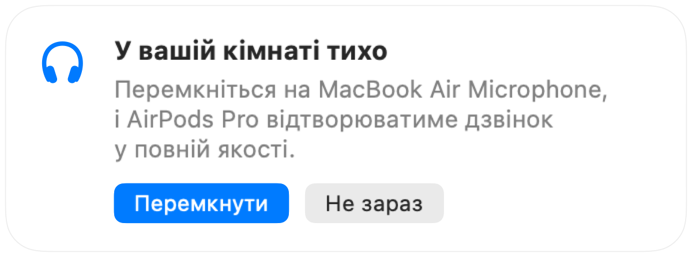

Чому AirPods звучать гірше під час дзвінків на Mac
Підключаєтеся до наради в AirPods, і раптом звук стає глухим та пласким. Це не поломка. Коли програма задіює мікрофон AirPods, Bluetooth перемикає навушники в режим виклику, що відчутно знижує якість звуку.
Рішення полягає в тому, щоб говорити у вбудований мікрофон Mac, залишивши для AirPods лише відтворення. У тихій кімнаті мікрофон Mac звучить чудово, а відеодзвінок знову грає у повній якості. Muffle помічає тишу й одразу пропонує перемкнутися.
Як зберегти якість звуку під час дзвінків
- 1
Установіть Muffle і залиште увімкненою опцію «Пропонувати найкращий мікрофон для кімнати».
- 2
Приєднайтеся до дзвінка в AirPods, як зазвичай.
- 3
Коли Muffle повідомить, що у кімнаті тихо, натисніть «Перемкнути».
- 4
Якщо пізніше стане шумно, Muffle знову запропонує перемкнутися на мікрофон AirPods.

- Перемикання працює, якщо програма для конференцій використовує стандартний системний мікрофон. У Google Meet, Zoom і Teams встановіть системне джерело звуку за замовчуванням.
- Залишайтеся поруч із Mac, поки використовуєте його мікрофон. Muffle радить цей варіант лише тоді, коли ваш голос чутно чітко.
Питання та відповіді
Чому AirPods погано звучать під час дзвінків на Mac?
Канал Bluetooth не здатний одночасно передавати стереозвук високої якості та звук вашого голосу. Тому AirPods переходять у режим виклику, коли активний їхній мікрофон.
Чи перемикає Muffle мікрофони самостійно?
Ні. Muffle лише пропонує вдалий мікрофон. Жодних змін не станеться, доки ви не натиснете «Перемкнути».